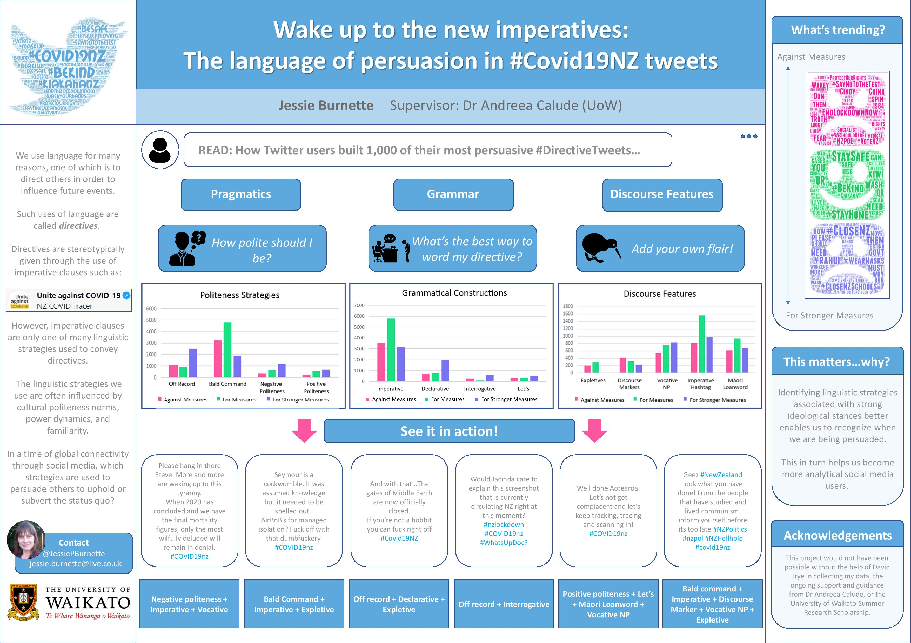

Covid NZ Twitter Corpus
The Covid NZ Twitter (CovidNZT) Corpus consists of 40,243 tweets obtained between 22 February and 10 November 2020 (1,001 of which have been manually coded). All tweets contain the hashtag #covid19nz, including variations with one or more capital letters. The aim of the project is to study linguistic strategies which tweeters use to express their viewpoints and stance in Covid-related tweets. In particular, one of our points of interests is the use of directives.

If you would like to talk to us about this project, please email Andreea Calude.
Downloading the CovidNZT Corpus
The CovidNZT Twitter Corpus is available on request.
Publications
- Burnette, J., & Long, M. (2022). Bubbles and lockdown in Aotearoa New Zealand: the language of self-isolation in #Covid19NZ tweets. Medical Humanities. doi: 10.1136/medhum-2022-012401.
- Burnette, J., & Calude, A. S. (2022). Wake up New Zealand! Directives, politeness and stance in Twitter #Covid19NZ posts. Journal of Pragmatics, 196, 6-23. doi: 10.1016/j.pragma.2022.05.002.
Team
Funding
We graciously acknowledge the generous support of:
- The University of Waikato Summer Scholarship